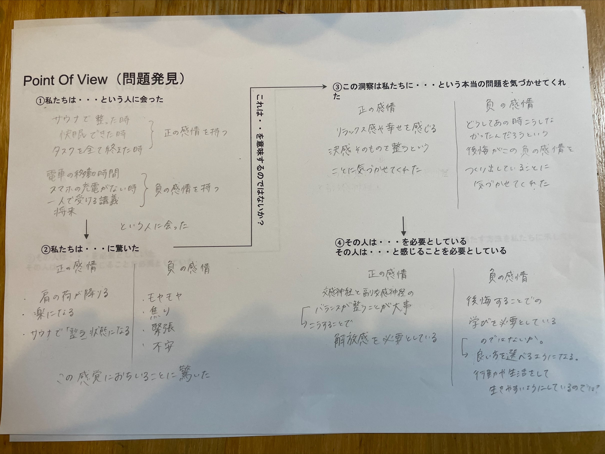

デザイン演習Ⅲ・Ⅳ
商品・サービス企画設計(デザイン思考）
＊Assignment1
光を操るとは・・・
水、森、川
自然の)中での美しい幻想的なイメージを醸し出している。
例：チームラボ 光の幻想
例；パヒューム ダンスと光→動きのある光
ネオピクセル
いろいろな色に光る物を制御して使う。
＜配線＞
NeoPixelの+5V(赤）ーーー>Arduinoの5V
NeoPixelのDin（黄）ーーー>Arduinoの9番ピン(470Ω程度の抵抗を入れる)
NeoPixelのGND（黒）ーーー>ArduinoのGND
＊Arduinoから電源を取ろうとすると連結は5個が限界なので、Arduinoが壊れるのを防ぐためには、+5V、GNDは外部電源とつなぐ
実際のソースコード
一番好きな色に設定したソースコード(ランダム）
rgb→カラーの色
ｒ：レッド
ｇ：グリーン
ｂ：ブルー
255が一番強い光で、0に近いほど光が薄くなるということが分かった。どれかの値を低くしたりして調節することによって赤に近いいろや、緑に近いいろ、そして青に近い色だったり好みの色に変えることができる。
赤色を強くしてみた
参考にしたソースコード
今回の授業で使ったリンク先
ArduinoでNeoPixelを動かす
＊Assignment2
6班で話合った内容
😒負の感情
何も考えなくていい、無の状態が正の感情になる。健康にもいいし、体が整うことがいい。
🤩正の感情
電車に乗っている時間→出来ることが少ない、、憂鬱だからスマホをいじることで充電が少なくなるなど
一人で受ける講義が苦痛…周りは知り合い同士で受けていて楽しそう、、緊張している
POVまとめ

デザイン演習Ⅲ・Ⅳ 演習ノート一覧